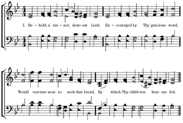
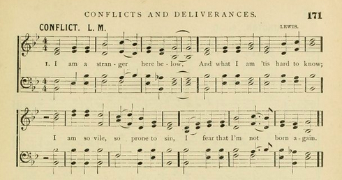
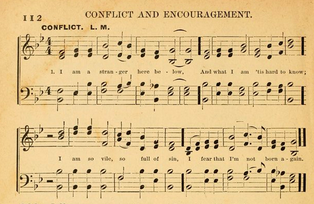
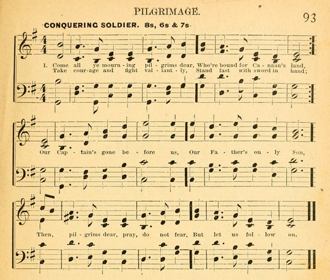
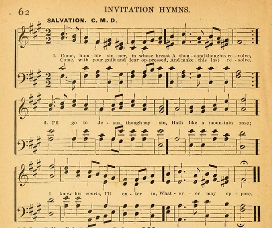
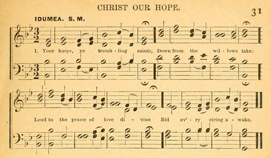
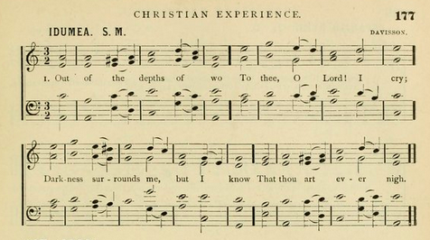

The source of Conflict¶
Primitive Baptist hymnals¶
Elder John R. Daily’s Primitive Baptist Hymn and Tune Book is a seven-shape Primitive Baptist hymnal with a strikingly distinctive harmonic style. [1] It turns out that many of Daily’s arrangements come from a few Primitive Baptist hymnals of the 1880s. One source is Durant & Lester’s 1886 “Hymn and Tune Book.” Another source is Sears & Ausmus’s 1881 Primitive Baptist Hymnal, which I haven’t seen discussed elsewhere. These sources include a number of arrangements that were later printed in Daily. They also include some arrangements that didn’t make it into Daily, but that are written in a similar style.
Still, Daily was not just an imitator of these earlier arrangers. The Daily book includes some arrangements that are originals as far as I can tell, and others that are improvements or refiniments of works from D&L or S&A.
In other words, what I’ve come to think of as the “Daily book style” wasn’t just the work of one eccentric arranger. It was part of an ongoing tendency in Primitive Baptist harmony. S&A is the earliest source I’ve found for this style, but Daily and D&L were active contributors, and it is possible that there were other authors involved too.
Conflict¶
The song CONFLICT, which was recently repopularized in the Shenandoah Harmony, illustrates several of the Daily book’s distinctive features. Daily’s harmonies lean heavily towards major keys, and he reharmonizes many old minor-key folk hymns with borrowings from the relative major. His arrangements often uses IV chords where earlier books like the Sacred Harp would use ii or vi — and in minor-key songs, he makes heavy use of the IV chord of the relative major [2]. His arrangement for CONFLICT ends its first and last phrases in minor, but spends most of the rest of the song in the relative major, with heavy use of the relative major IV chord.
The Better Music movement, spearheaded by Lowell Mason, also favored major keys and traditional I-IV-V harmonies. But Daily’s harmonies are not just a copy of the ones favored by Mason and friends. For instance, a number of songs in the Daily book also have what Rachel Wells Hall has called unanswered cadences forbidden in Mason’s “scientific” harmony — in which a major-key piece ends unexpectedly on IV, V or vi, rather than I.
Daily’s own version of CONFLICT does not have an unanswered cadence. But as Rachel points out an earlier version in D&L did have one. In that book it was completely recast in major, with no trace of its minor-key origins, and in order to accommodate the last note of the tune it ended on IV rather than I.
As it turns out, this earlier version of CONFLICT did not originate with D&L. It appeared several years earlier in S&A:
Other songs¶
In fact, many of the harmonically adventurous arrangements from the Daily book and D&L appeared in S&A first.
Conquering soldier S&A 93, Daily 211) is a lovely example. This arrangement, which first appeared in S&A, takes the minor-key tune which appears in the Sacred Harp as 201 PILGRIM and reharmonizes it entirely in major, resorting to an unanswered cadence on IV to accommodate the last note. For this song, Daily does not make any significant changes to S&A’s arrangement. In particular, unlike in CONFLICT, he keeps the unanswered cadence, which in my opinion is one of the song’s finest features. Here’s the Sacred Harp version of the tune, harmonized in minor:
And here’s the arrangement found in S&A and Daily, reharmonized in major:
Another example of these books’ style is SALVATION (S&A 62, D&L 189, Daily 158). It is another minor key tune, and begins and ends on the tonic in minor, but the second half of the tune strays into the relative major. (The high point for me is at the end of the third line, where the 1-La is harmonized not with a i or iv as it usually would be in the Sacred Harp, but with IV/III, the IV chord of the relative major key.) S&A and D&L have nearly identical versions; Daily has the same chord changes, but many of the details of the parts are different.
Some other highlights from D&L and Daily that seem to have originated in S&A include:
- An arrangement of SOCIAL BAND that leans heavily on the relative major (S&A 10, D&L 85, also in the Daily book as 262 AMBOY).
- A reharmonization of the E Dorian tune LAND OF REST in which it is treated as if it were in D Major — requiring it to end in an unanswered cadence on the V chord to accomodate the final E (S&A 150, D&L 135).
- A startling Lydian-mode version of BRAY (S&A 39, D&L 45), a tune which appeared in a plainer major arrangement in the Hesperian Harp (64).
- An oddly Classical-sounding major-key version of STAR IN THE EAST (S&A 185, D&L 24). [3]
- KENTUCKY (S&A 18, D&L 202), a pleasant but fairly tame reharmonization of Lucius Chapin’s PRIMROSE or NINETY-THIRD PSALM (SH 31).
And there are some gems in S&A that weren’t repeated in those later books, including reharmonized versions of MINISTER’S FAREWELL (S&A 86) and RESTORATION (retitled I WILL ARISE, S&A 12).
A regional trend?¶
Many, though not all, of these highlights in S&A are marked “Arranged by T. B. A.” — almost certainly the initials of Thomas Box Ausmus, the book’s second author. It is tempting to wonder if Ausmus might in fact have been the source of all of these distinctive arrangements.
But that can’t be the whole story — for Daily and D&L also have reharmonizations in the same style that did not originate in S&A. This suggests that the authors of the other books were not just copying from Ausmus, but were participating in a larger stylistic trend along with him.
One especially dramatic example of the three books’ independence from each other is the tune IDUMEA. Each of the three books has its own version. Sears & Ausmus (31) leave the melody unaltered, but reharmonize it entirely in the relative major up until the final two bars.
Daily (125) leaves the tune in minor, though with more borrowings from the relative major than were in the original, but he adds several chromatic alterations to the melody. Durand & Lester (177) take a similar approach to Daily, but make different choices in reharmonizing the piece.
All three arrangements seem to me like “modernizations” of the tune in more or less the same spirit.
So these arrangements weren’t just the work of a single eccentric arranger: the authors of each book created some new arrangements of their own, [4] followings similar stylistic trends. In fact, I’m tempted to wonder whether it may have been a regional or denominational trend. The three book’s authors were members of the same faith, all worked within several decades of each other, and all were connected in one way or another to a fairly small area surrounding Saint Louis and Indianapolis. [5] This could be a coincidence. (I have not looked at Primitive Baptist hymnals of that era from other regions, or hymnals from other churches from that region.) But it could also suggest that these authors were participating in a local tradition. Perhaps Primitive Baptist congregations in that place and time were beginning to sing in distinctive ways — preferring major chords, using IV in major and IV/III in minor, becoming fond of unanswered cadences — and these books’ authors were echoing the new style in their arrangements.
Footnotes
| [1] | The Daily book was first published in 1902, and is still in print. It is available from the Primitive Baptist Library, http://www.pblib.org. It is the source of several popular songs reprinted in the Shenandoah Harmony (CONFLICT is one of them) and is starting to be used in social singings by some Sacred Harp singers in the mid-Atlantic and New England. |
| [2] | This is especially dramatic in contrast to the harmonic tradition found in the Sacred Harp, where “minor”-key folk hymns are almost all in the dorian mode. The IV chord of the relative major (notated as IV/III) is based on the sixth scale degree; and so the dorian mode, which raises the sixth scale degree, makes that chord unavailable. One of the few exceptions is 271 ARKANSAS, a minor-key tune in the folk-hymn style which briefly features an open fifth “power chord” on IV/III (and is always sung in true minor rather than dorian), but it uses this chord very differently than Daily and company would have — it is part of a passage in which the bass follows the melody in parallel fifths. In the Daily book style, IV/III usually appears as part of traditional tonic-dominant-subdominant chord changes in the relative major, and parallel fifths of any sort are comparatively rare. The Makers of the Sacred Harp tells us the author of ARKANSAS was Shadrack Barnett of Carroll County, Georgia, who had no apparent connection to the arrangers discussed here. |
| [3] | Unlike most reharmonizations in these books, where the tune is left mostly unaltered but the chords underneath it are changed, this version of STAR IN THE EAST converts the tune from minor to major by chromatic alteration, simply stripping out all of its flats. |
| [4] | It is possible that there is a common source that we still have not located for most of these arrangements — some fourth book that these three were drawing from. But it is unlikely that that fourth book would have included three different reharmonizations of IDUMEA, and that each of the three books we do have would have taken a different one. It is much more likely that each of the books we have was the original source for one reharmonization. |
| [5] | Thomas Box Ausmus probably lived in Brown County, IL, due north of Saint Louis, up until 1899. We know this from church records: apparently Ausmus was ejected from his Brown County congregation in 1899 for taking up residence with a woman not his wife and fraudulently practicing medicine under an assumed name! An announcement of this was printed in the “Primitive Monitor” in March 1899. Daily’s book is now published in Carthage, IL, which is tantalizingly close to Brown County — only 50 or so miles — but Daily himself was apparently more closely connected to Indianapolis. He is mentioned in connection with a debate in Ewing, Illinois, which is southeast of Saint Louis and 200 miles from Brown County. but according to an obituary in the October 1920 “Primitive Monitor”, he was baptized in Clinton County, IN, and died in Indianapolis in 1920. The original 1902 edition of his book was published in Indianapolis as well. Durand & Lester’s hymnal was also published in Indianapolis, though the authors were from farther east: Durand from Bucks County, PA, and Lester from Floyd County, VA. |